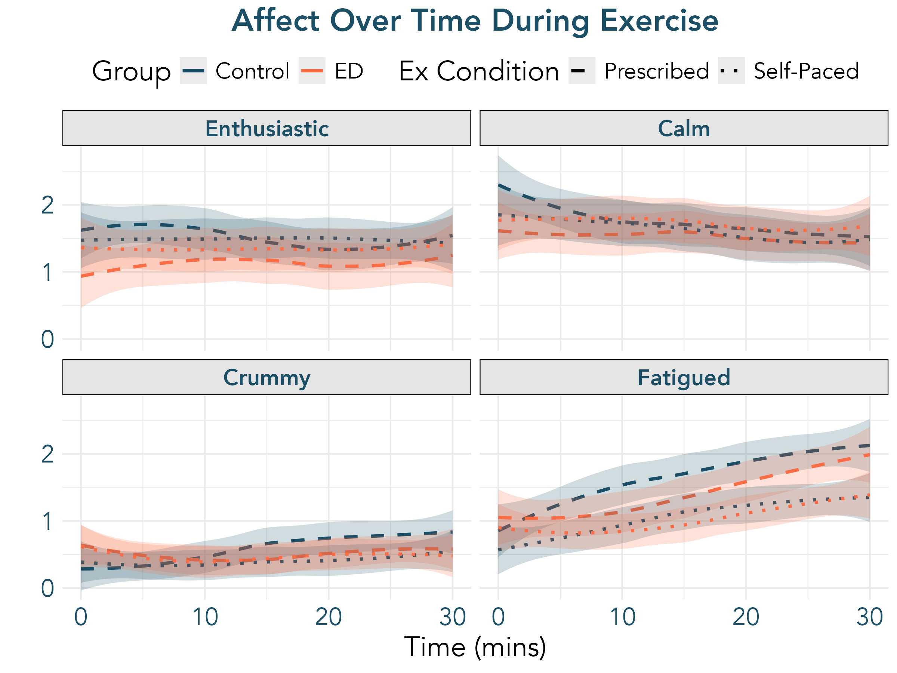
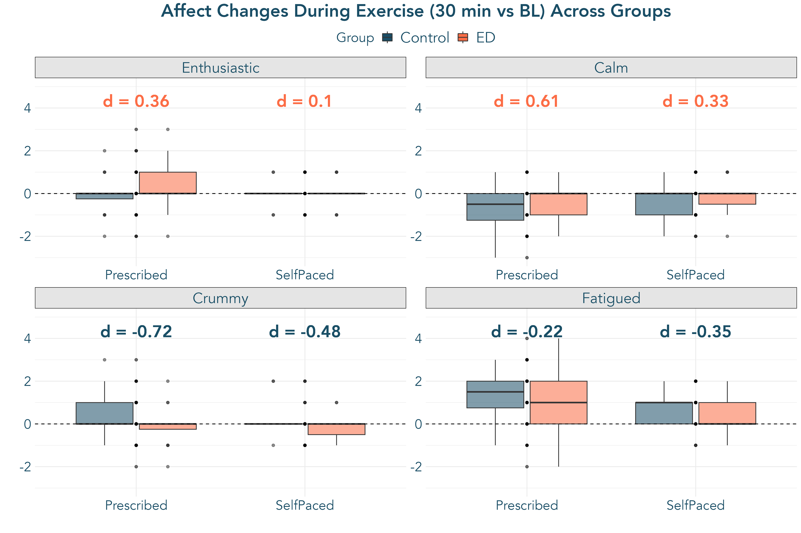
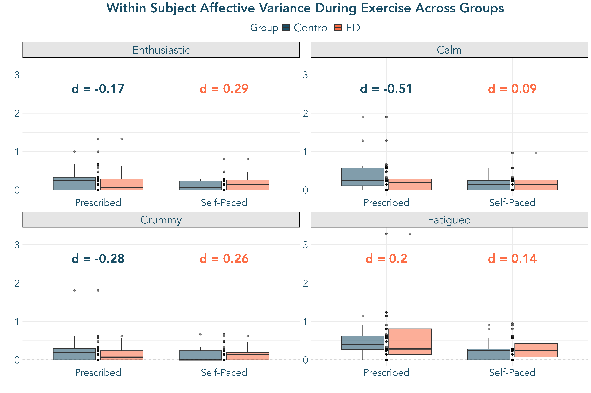
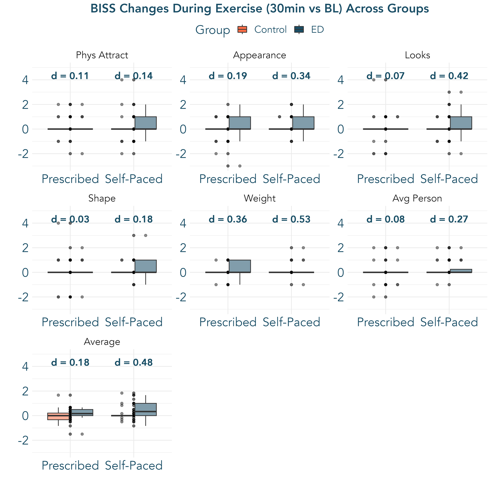
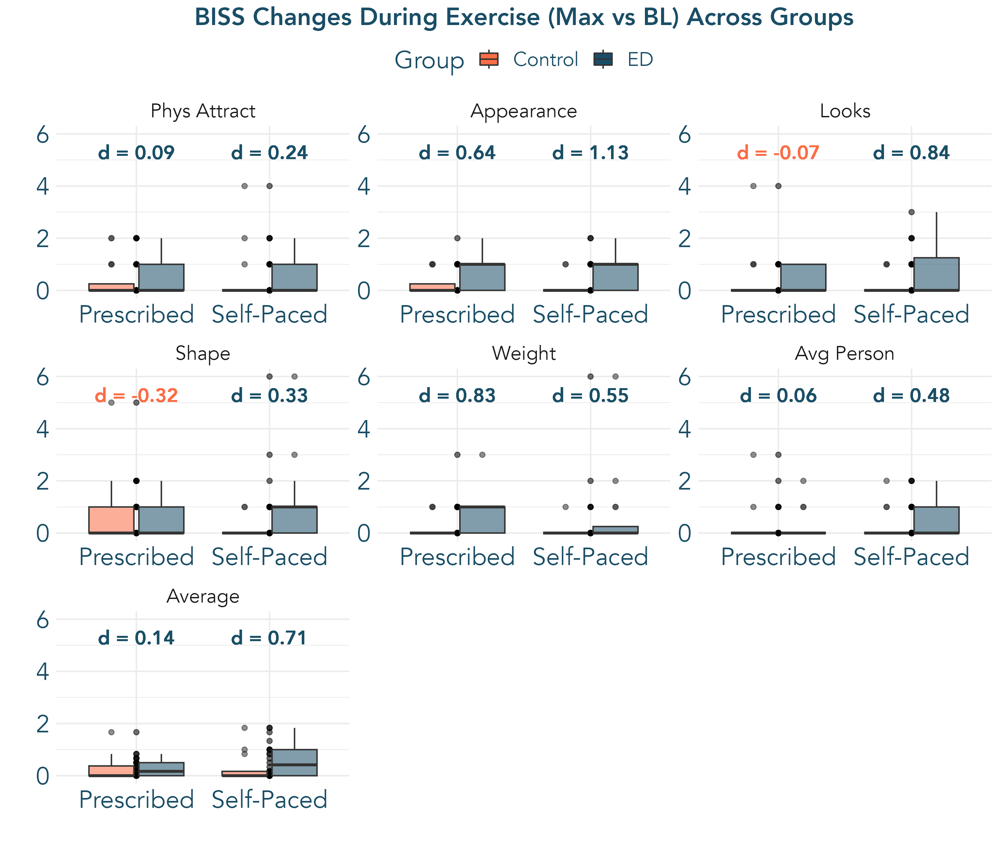
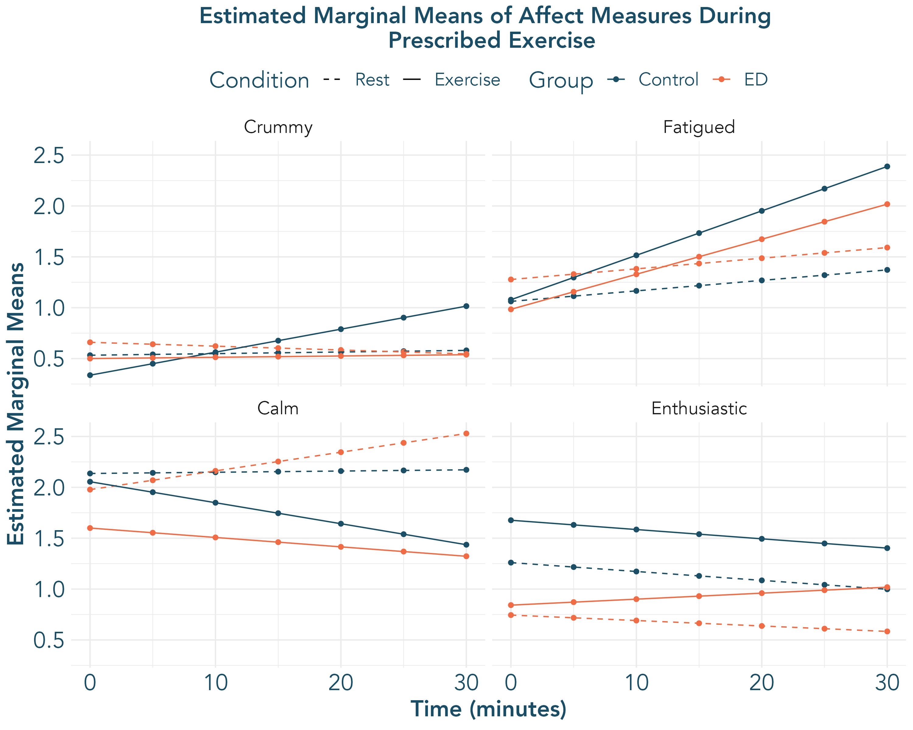

MAXED Registered Report Results
Results
Preliminary Analysis
We will provide sample descriptive statistics for both ED and HC groups on variables of interest (e.g., age, ED diagnosis, BMI, compulsive exercise, Eating Disorder Examination [EDE] subscales). Comparison of affect ratings before and after milkshake ingestion will also serve as a manipulation check to clarify the degree to which negative affect (specifically anxiety) increased as a result of this challenge.
?@tbl-x presents xxx
Aim 1: Confirm feasibility of paradigms evaluating acute response to exercise among outpatient individuals with EDs.
We will confirm feasibility of our exercise-based tasks via a) study dropout at all timepoints, b) adverse events, c) completion rates of exercise task on Day B, d) completion rates of milkshake task across ED and HC participants. Over the course of the study, we expect both ED and HC groups to meet thresholds of < 20% dropout, zero adverse events, and > 80% task completion.
Aim 2: Characterize variability in biobehavioral response to in-lab exercise.
We will characterize changes during exercise in state body image, mood, and biological markers in both ED and HC groups; we will specifically characterize mean levels of, and variability in, biobehavioral response to exercise across the ED and HC groups. We will evaluate exercise-induced changes in DA, 5-HT, BDNF, leptin, and eCB biomarkers for the Prescribed Exercise Task. Shifts in affect and biomarkers will be evaluated descriptively with measures of central tendency, skew, and variance. We will further characterize shifts in biomarkers through linear mixed effect models.
Specific models tested are noted in Table 1.
| Model Name | Parameters |
|---|---|
| Overall Model: Affect and Body Image Variables | DV ~ 1 + Age + Group + Time + BMI*Condition + Time*Condition + Time*Group*Condition + (1+Time | Condition: Participant) |
| Within ED: Affect and Body Image Variables | DV ~ 1 + Age + Time + BMI*Condition + Time*Condition + Time*Condition + (1+Time | Condition: Participant) |
| Overall Biomarker Model | Biomarker ~ 1 + Age + Group + Time + BMI*Condition + Time*Condition + (1 + Time | Condition: Participant) |
| Within ED: Biomarkers | Biomarker ~ 1 + Age + Time + BMI*Condition + Time*Condition + (1 + Time | Condition: Participant) |
| Heterogeneity of Variance across Groups | DV ~ (1+ Group*Time | Condition: Participant) |
If models do not converge, we will first increase iterations and test alternative optimizers. If convergence issues persist, we will first adjust the model by removing covariate terms (Age, BMI*Condition). As our primary aim of this study includes effect-size estimation within the ED group, we will consider computing models separately within ED and HC groups, removing group effects and interactions, if needed.
Response to Exercise across ED and HC: Descriptive Analysis
Affect
Visual depiction of raw changes in affect measurements during exercise across groups is presented in Figure Figure 1.
Average levels of change from 0 to 30 minutes along with variance in affect across groups are presented in Figure 2.


Average Change
Raw changes indicate that, relative to controls, ED participants may feel less crummy after Self-Paced exercise. Raw change scores across groups comparing 30 min vs. BL along with the maximum increases and maximum decreases from baseline are presented in Table 2.
Between-Subject Variability across ED and Control
Standard deviations are presented in Table 2, along with Levine’s tests evaluating equality of between-subject variability in across ED and HC groups
| Change Indicator | Variable | task | Mean (ED) | Mean (Control) | SD (ED) | SD (Control) | F (Levene's) | df | p.value |
|---|---|---|---|---|---|---|---|---|---|
| 30 min vs. BL | Enthusiastic | Prescribed | -0.24 | -0.50 | 0.83 | 1.00 | 2.42 | 35 | 0.13 |
| Max - BL | Enthusiastic | Prescribed | 0.82 | 0.70 | 0.95 | 0.73 | 0.88 | 35 | 0.35 |
| BL - Min | Enthusiastic | Prescribed | 0.41 | 1.05 | 0.71 | 0.69 | 0.04 | 35 | 0.85 |
| 30 min vs. BL | Enthusiastic | SelfPaced | 0.12 | 0.00 | 0.62 | 0.46 | 1.33 | 34 | 0.26 |
| Max - BL | Enthusiastic | SelfPaced | 1.12 | 0.75 | 2.45 | 0.55 | 2.26 | 34 | 0.14 |
| BL - Min | Enthusiastic | SelfPaced | 0.75 | 0.65 | 0.77 | 0.49 | 2.75 | 34 | 0.11 |
| 30 min vs. BL | Crummy | Prescribed | -0.06 | 0.10 | 0.97 | 0.79 | 1.18 | 35 | 0.29 |
| Max - BL | Crummy | Prescribed | 0.82 | 0.80 | 0.88 | 0.95 | 0.62 | 35 | 0.44 |
| BL - Min | Crummy | Prescribed | 0.59 | 0.25 | 0.87 | 0.55 | 2.06 | 35 | 0.16 |
| 30 min vs. BL | Crummy | SelfPaced | -0.19 | 0.15 | 0.66 | 0.67 | 0.91 | 34 | 0.35 |
| Max - BL | Crummy | SelfPaced | 1.06 | 0.60 | 0.93 | 0.94 | 0.10 | 34 | 0.75 |
| BL - Min | Crummy | SelfPaced | 0.44 | 0.30 | 0.51 | 0.57 | 0.56 | 34 | 0.46 |
| 30 min vs. BL | Fatigued | Prescribed | 0.59 | 0.35 | 1.37 | 1.09 | 0.34 | 35 | 0.56 |
| Max - BL | Fatigued | Prescribed | 1.41 | 1.70 | 1.28 | 0.86 | 2.47 | 35 | 0.12 |
| BL - Min | Fatigued | Prescribed | 0.65 | 0.50 | 0.86 | 0.69 | 0.33 | 35 | 0.57 |
| 30 min vs. BL | Fatigued | SelfPaced | 0.50 | 0.75 | 0.89 | 0.72 | 1.52 | 34 | 0.23 |
| Max - BL | Fatigued | SelfPaced | 1.38 | 1.30 | 0.89 | 0.92 | 0.49 | 34 | 0.49 |
| BL - Min | Fatigued | SelfPaced | 0.44 | 0.10 | 0.51 | 0.31 | 6.00 | 34 | 0.02 |
| 30 min vs. BL | Calm | Prescribed | 0.76 | -0.10 | 0.90 | 1.17 | 0.68 | 35 | 0.42 |
| Max - BL | Calm | Prescribed | 1.12 | 0.60 | 0.86 | 0.82 | 0.00 | 35 | 0.96 |
| BL - Min | Calm | Prescribed | 0.82 | 1.30 | 0.88 | 0.98 | 0.04 | 35 | 0.84 |
| 30 min vs. BL | Calm | SelfPaced | -0.12 | -0.35 | 0.89 | 0.67 | 0.73 | 34 | 0.40 |
| Max - BL | Calm | SelfPaced | 0.88 | 1.10 | 0.81 | 0.85 | 0.24 | 34 | 0.63 |
| BL - Min | Calm | SelfPaced | 0.75 | 0.65 | 0.58 | 0.81 | 2.75 | 34 | 0.11 |
Within-Subject Variability across ED and Control
When looking at variability within, rather than between, subjects there is indication of potential differential variability in affect during exercise in ED compared with controls. In the Prescribed Task, those with EDs may experience less affective variability, particularly related to Fatigue and Enthusiasm. In comparison, in the self-paced task, ED participants may demonstrate grater variability in fatigue, enthusiasm and feeling crummy (with less variability in feeling calm) relative to controls.
Body Image
Visual depiction of raw changes in affect measurements during exercise across groups is presented in Figure ?@fig-BissLoessPlot.
Average levels of change from 0 to 30 minutes along, the Max vs. Baseline Values, and Variance in affect across groups are presented in Figure 3.


Biomarker Response
Response to Exercise vs. Rest across ED and Control Groups
Affect
Overall Model
Results from each variable in the overall model are presented in Table 3 with estimated marginal means for each timepoint are presented in Figure 4.
| variable | task | term | Estimate | Std. Error | df | t value | Pr(>|t|) |
|---|---|---|---|---|---|---|---|
| Crummy | Prescribed | Intercept | 1.849 | 0.984 | 64 | 1.878 | 6.49e-02 |
| Crummy | Prescribed | Age | -0.115 | 0.034 | 63 | -3.343 | 1.41e-03 |
| Crummy | Prescribed | Group | 0.127 | 0.248 | 61 | 0.512 | 6.11e-01 |
| Crummy | Prescribed | Time | 0.002 | 0.006 | 65 | 0.273 | 7.86e-01 |
| Crummy | Prescribed | BMI | 0.043 | 0.038 | 63 | 1.146 | 2.56e-01 |
| Crummy | Prescribed | Condition | -1.208 | 1.208 | 64 | -1.000 | 3.21e-01 |
| Crummy | Prescribed | BMI x Condition | 0.045 | 0.051 | 63 | 0.868 | 3.89e-01 |
| Crummy | Prescribed | Time x Condition | 0.021 | 0.008 | 65 | 2.554 | 1.30e-02 |
| Crummy | Prescribed | Group x Time | -0.005 | 0.008 | 66 | -0.633 | 5.29e-01 |
| Crummy | Prescribed | Group x Condition | 0.037 | 0.347 | 61 | 0.105 | 9.16e-01 |
| Crummy | Prescribed | Group x Time x Condition | -0.016 | 0.012 | 66 | -1.343 | 1.84e-01 |
| Crummy | SelfPaced | Intercept | 0.911 | 1.147 | 62 | 0.794 | 4.30e-01 |
| Crummy | SelfPaced | Age | -0.044 | 0.040 | 61 | -1.096 | 2.78e-01 |
| Crummy | SelfPaced | Group | 0.676 | 0.278 | 61 | 2.426 | 1.83e-02 |
| Crummy | SelfPaced | Time | -0.005 | 0.005 | 64 | -1.081 | 2.84e-01 |
| Crummy | SelfPaced | BMI | 0.023 | 0.044 | 61 | 0.535 | 5.94e-01 |
| Crummy | SelfPaced | Condition | -1.000 | 1.411 | 62 | -0.709 | 4.81e-01 |
| Crummy | SelfPaced | BMI x Condition | 0.035 | 0.060 | 61 | 0.578 | 5.65e-01 |
| Crummy | SelfPaced | Time x Condition | 0.012 | 0.007 | 64 | 1.691 | 9.58e-02 |
| Crummy | SelfPaced | Group x Time | 0.011 | 0.007 | 64 | 1.559 | 1.24e-01 |
| Crummy | SelfPaced | Group x Condition | -0.442 | 0.389 | 60 | -1.136 | 2.61e-01 |
| Crummy | SelfPaced | Group x Time x Condition | -0.019 | 0.010 | 64 | -1.873 | 6.56e-02 |
| Calm | Prescribed | Intercept | 3.504 | 1.412 | 64 | 2.482 | 1.57e-02 |
| Calm | Prescribed | Age | -0.056 | 0.049 | 63 | -1.135 | 2.61e-01 |
| Calm | Prescribed | Group | -0.159 | 0.344 | 64 | -0.461 | 6.46e-01 |
| Calm | Prescribed | Time | 0.001 | 0.007 | 65 | 0.169 | 8.67e-01 |
| Calm | Prescribed | BMI | -0.011 | 0.054 | 63 | -0.203 | 8.40e-01 |
| Calm | Prescribed | Condition | 0.191 | 1.733 | 64 | 0.110 | 9.13e-01 |
| Calm | Prescribed | BMI x Condition | -0.012 | 0.074 | 63 | -0.162 | 8.72e-01 |
| Calm | Prescribed | Time x Condition | -0.022 | 0.010 | 65 | -2.186 | 3.24e-02 |
| Calm | Prescribed | Group x Time | 0.017 | 0.010 | 66 | 1.669 | 9.98e-02 |
| Calm | Prescribed | Group x Condition | -0.297 | 0.481 | 64 | -0.617 | 5.39e-01 |
| Calm | Prescribed | Group x Time x Condition | -0.006 | 0.014 | 66 | -0.401 | 6.90e-01 |
| Calm | SelfPaced | Intercept | 3.705 | 1.470 | 61 | 2.520 | 1.43e-02 |
| Calm | SelfPaced | Age | -0.111 | 0.051 | 61 | -2.172 | 3.37e-02 |
| Calm | SelfPaced | Group | -0.702 | 0.353 | 61 | -1.987 | 5.14e-02 |
| Calm | SelfPaced | Time | 0.006 | 0.006 | 65 | 0.992 | 3.25e-01 |
| Calm | SelfPaced | BMI | 0.047 | 0.056 | 61 | 0.829 | 4.11e-01 |
| Calm | SelfPaced | Condition | -1.101 | 1.808 | 61 | -0.609 | 5.45e-01 |
| Calm | SelfPaced | BMI x Condition | 0.013 | 0.077 | 61 | 0.166 | 8.69e-01 |
| Calm | SelfPaced | Time x Condition | -0.018 | 0.009 | 64 | -2.026 | 4.69e-02 |
| Calm | SelfPaced | Group x Time | 0.000 | 0.009 | 65 | 0.056 | 9.56e-01 |
| Calm | SelfPaced | Group x Condition | 0.738 | 0.494 | 61 | 1.494 | 1.40e-01 |
| Calm | SelfPaced | Group x Time x Condition | 0.005 | 0.013 | 64 | 0.375 | 7.09e-01 |
| Enthusiastic | Prescribed | Intercept | 2.432 | 1.403 | 64 | 1.734 | 8.78e-02 |
| Enthusiastic | Prescribed | Age | -0.064 | 0.049 | 63 | -1.302 | 1.98e-01 |
| Enthusiastic | Prescribed | Group | -0.516 | 0.337 | 63 | -1.530 | 1.31e-01 |
| Enthusiastic | Prescribed | Time | -0.009 | 0.007 | 65 | -1.291 | 2.01e-01 |
| Enthusiastic | Prescribed | BMI | 0.005 | 0.054 | 63 | 0.086 | 9.32e-01 |
| Enthusiastic | Prescribed | Condition | 1.807 | 1.722 | 64 | 1.049 | 2.98e-01 |
| Enthusiastic | Prescribed | BMI x Condition | -0.061 | 0.073 | 63 | -0.835 | 4.07e-01 |
| Enthusiastic | Prescribed | Time x Condition | -0.000 | 0.010 | 65 | -0.041 | 9.67e-01 |
| Enthusiastic | Prescribed | Group x Time | 0.003 | 0.010 | 66 | 0.342 | 7.33e-01 |
| Enthusiastic | Prescribed | Group x Condition | -0.319 | 0.471 | 63 | -0.676 | 5.02e-01 |
| Enthusiastic | Prescribed | Group x Time x Condition | 0.012 | 0.014 | 65 | 0.841 | 4.03e-01 |
| Enthusiastic | SelfPaced | Intercept | 2.668 | 1.480 | 62 | 1.802 | 7.64e-02 |
| Enthusiastic | SelfPaced | Age | -0.043 | 0.051 | 61 | -0.831 | 4.09e-01 |
| Enthusiastic | SelfPaced | Group | -0.794 | 0.370 | 62 | -2.146 | 3.58e-02 |
| Enthusiastic | SelfPaced | Time | -0.000 | 0.009 | 52 | -0.040 | 9.68e-01 |
| Enthusiastic | SelfPaced | BMI | -0.015 | 0.057 | 61 | -0.268 | 7.90e-01 |
| Enthusiastic | SelfPaced | Condition | 1.079 | 1.820 | 62 | 0.593 | 5.55e-01 |
| Enthusiastic | SelfPaced | BMI x Condition | -0.047 | 0.077 | 61 | -0.612 | 5.43e-01 |
| Enthusiastic | SelfPaced | Time x Condition | -0.003 | 0.013 | 52 | -0.223 | 8.24e-01 |
| Enthusiastic | SelfPaced | Group x Time | 0.015 | 0.013 | 52 | 1.188 | 2.40e-01 |
| Enthusiastic | SelfPaced | Group x Condition | 0.434 | 0.517 | 61 | 0.840 | 4.04e-01 |
| Enthusiastic | SelfPaced | Group x Time x Condition | -0.009 | 0.018 | 52 | -0.475 | 6.37e-01 |
| Fatigued | Prescribed | Intercept | 3.567 | 1.215 | 63 | 2.934 | 4.66e-03 |
| Fatigued | Prescribed | Age | -0.111 | 0.042 | 61 | -2.618 | 1.11e-02 |
| Fatigued | Prescribed | Group | 0.215 | 0.308 | 64 | 0.699 | 4.87e-01 |
| Fatigued | Prescribed | Time | 0.010 | 0.010 | 64 | 1.076 | 2.86e-01 |
| Fatigued | Prescribed | BMI | -0.013 | 0.046 | 62 | -0.272 | 7.86e-01 |
| Fatigued | Prescribed | Condition | -2.521 | 1.491 | 63 | -1.690 | 9.60e-02 |
| Fatigued | Prescribed | BMI x Condition | 0.112 | 0.063 | 62 | 1.763 | 8.29e-02 |
| Fatigued | Prescribed | Time x Condition | 0.033 | 0.014 | 64 | 2.459 | 1.66e-02 |
| Fatigued | Prescribed | Group x Time | 0.000 | 0.014 | 65 | 0.010 | 9.92e-01 |
| Fatigued | Prescribed | Group x Condition | -0.310 | 0.431 | 63 | -0.719 | 4.75e-01 |
| Fatigued | Prescribed | Group x Time x Condition | -0.009 | 0.020 | 65 | -0.477 | 6.35e-01 |
| Fatigued | SelfPaced | Intercept | 2.780 | 1.173 | 62 | 2.370 | 2.09e-02 |
| Fatigued | SelfPaced | Age | -0.106 | 0.041 | 61 | -2.601 | 1.16e-02 |
| Fatigued | SelfPaced | Group | 0.414 | 0.281 | 62 | 1.474 | 1.46e-01 |
| Fatigued | SelfPaced | Time | -0.008 | 0.006 | 65 | -1.224 | 2.26e-01 |
| Fatigued | SelfPaced | BMI | 0.029 | 0.045 | 61 | 0.657 | 5.14e-01 |
| Fatigued | SelfPaced | Condition | -0.924 | 1.441 | 62 | -0.641 | 5.24e-01 |
| Fatigued | SelfPaced | BMI x Condition | 0.015 | 0.061 | 61 | 0.239 | 8.12e-01 |
| Fatigued | SelfPaced | Time x Condition | 0.034 | 0.009 | 64 | 3.694 | 4.59e-04 |
| Fatigued | SelfPaced | Group x Time | 0.004 | 0.009 | 65 | 0.389 | 6.99e-01 |
| Fatigued | SelfPaced | Group x Condition | -0.444 | 0.392 | 62 | -1.132 | 2.62e-01 |
| Fatigued | SelfPaced | Group x Time x Condition | -0.009 | 0.013 | 64 | -0.704 | 4.84e-01 |


From an interpretation of the estimated marginal means, there are initial indications of ED and Control Groups responding differently to tasks. For instance, the ED group exhibited higher negative affect (feeling crummy) in the rest condition of the self-paced task (i.e. when asked to ingest a milkshake and then rest), which may to be mitigated by the opportunity to exercise. The ED group also showed a slower increase in fatigue, relative to the Control group, in both Prescribed and Self-paced Exercise, and a trend toward increased enthusiasm during Prescribed Exercise, relative to a decrease in Enthusiasm in the control group. These potential trends are suggested by graphical depictions; however, no significant Group x Time x Condition interactions emerged in the multi-level model, suggesting that these are likely to be small-to-moderate (rather than large) effects, if they do exist. The current pilot trial was not sufficiently powered to detect three-way interactions. Overall, significant Time x Condition interactions indicate that, across both ED and Control groups, participants tended to feel increased fatigue and crumminess, along with reduced calmness during exercise, relative to Rest.
Within ED:
Results for the model run within the ED group are presentd in Table 4. A Time x Condition effect emerged for calmness during Prescribed and fatigue during Self-Paced exercise. Individuals reported feeling less calm and more fatigued over time during exercise vs. rest. Older age was associated with feeling less crummy during the Self-Paced task and less Fatigued during the Prescribed task.
| variable | task | term | Estimate | Std. Error | df | t value | Pr(>|t|) |
|---|---|---|---|---|---|---|---|
| Crummy | Prescribed | Intercept | 2.836 | 1.115 | 29 | 2.544 | 1.65e-02 |
| Crummy | Prescribed | Age | -0.159 | 0.049 | 28 | -3.278 | 2.75e-03 |
| Crummy | Prescribed | Time | -0.004 | 0.006 | 32 | -0.670 | 5.08e-01 |
| Crummy | Prescribed | BMI | 0.043 | 0.053 | 29 | 0.820 | 4.19e-01 |
| Crummy | Prescribed | Condition | -1.575 | 1.474 | 29 | -1.068 | 2.94e-01 |
| Crummy | Prescribed | BMI x Condition | 0.063 | 0.065 | 29 | 0.960 | 3.45e-01 |
| Crummy | Prescribed | Time x Condition | 0.005 | 0.008 | 32 | 0.639 | 5.28e-01 |
| Crummy | SelfPaced | Intercept | 1.251 | 1.502 | 27 | 0.833 | 4.12e-01 |
| Crummy | SelfPaced | Age | -0.110 | 0.065 | 27 | -1.690 | 1.02e-01 |
| Crummy | SelfPaced | Time | 0.006 | 0.005 | 30 | 1.056 | 3.00e-01 |
| Crummy | SelfPaced | BMI | 0.097 | 0.071 | 27 | 1.354 | 1.87e-01 |
| Crummy | SelfPaced | Condition | 0.156 | 1.996 | 27 | 0.078 | 9.38e-01 |
| Crummy | SelfPaced | BMI x Condition | -0.037 | 0.089 | 27 | -0.420 | 6.78e-01 |
| Crummy | SelfPaced | Time x Condition | -0.007 | 0.008 | 29 | -0.924 | 3.63e-01 |
| Calm | Prescribed | Intercept | 2.645 | 1.549 | 30 | 1.707 | 9.83e-02 |
| Calm | Prescribed | Age | 0.025 | 0.068 | 29 | 0.364 | 7.19e-01 |
| Calm | Prescribed | Time | 0.018 | 0.007 | 32 | 2.683 | 1.14e-02 |
| Calm | Prescribed | BMI | -0.050 | 0.073 | 29 | -0.678 | 5.03e-01 |
| Calm | Prescribed | Condition | 0.316 | 2.051 | 29 | 0.154 | 8.79e-01 |
| Calm | Prescribed | BMI x Condition | -0.031 | 0.091 | 29 | -0.340 | 7.36e-01 |
| Calm | Prescribed | Time x Condition | -0.028 | 0.010 | 32 | -2.892 | 6.85e-03 |
| Calm | SelfPaced | Intercept | 2.847 | 1.699 | 27 | 1.675 | 1.05e-01 |
| Calm | SelfPaced | Age | -0.021 | 0.074 | 27 | -0.283 | 7.79e-01 |
| Calm | SelfPaced | Time | 0.007 | 0.007 | 30 | 0.914 | 3.68e-01 |
| Calm | SelfPaced | BMI | -0.025 | 0.081 | 27 | -0.305 | 7.63e-01 |
| Calm | SelfPaced | Condition | -0.543 | 2.259 | 27 | -0.240 | 8.12e-01 |
| Calm | SelfPaced | BMI x Condition | 0.021 | 0.101 | 27 | 0.206 | 8.38e-01 |
| Calm | SelfPaced | Time x Condition | -0.013 | 0.010 | 30 | -1.266 | 2.15e-01 |
| Enthusiastic | Prescribed | Intercept | 3.403 | 1.402 | 30 | 2.428 | 2.15e-02 |
| Enthusiastic | Prescribed | Age | -0.077 | 0.061 | 29 | -1.263 | 2.17e-01 |
| Enthusiastic | Prescribed | Time | -0.005 | 0.007 | 32 | -0.765 | 4.50e-01 |
| Enthusiastic | Prescribed | BMI | -0.050 | 0.066 | 29 | -0.762 | 4.52e-01 |
| Enthusiastic | Prescribed | Condition | 1.796 | 1.855 | 29 | 0.968 | 3.41e-01 |
| Enthusiastic | Prescribed | BMI x Condition | -0.075 | 0.082 | 29 | -0.914 | 3.68e-01 |
| Enthusiastic | Prescribed | Time x Condition | 0.011 | 0.010 | 32 | 1.158 | 2.56e-01 |
| Enthusiastic | SelfPaced | Intercept | 2.462 | 1.583 | 28 | 1.555 | 1.31e-01 |
| Enthusiastic | SelfPaced | Age | -0.050 | 0.069 | 27 | -0.726 | 4.74e-01 |
| Enthusiastic | SelfPaced | Time | 0.016 | 0.013 | 25 | 1.185 | 2.47e-01 |
| Enthusiastic | SelfPaced | BMI | -0.036 | 0.075 | 27 | -0.481 | 6.35e-01 |
| Enthusiastic | SelfPaced | Condition | 2.162 | 2.105 | 28 | 1.027 | 3.13e-01 |
| Enthusiastic | SelfPaced | BMI x Condition | -0.076 | 0.094 | 27 | -0.815 | 4.22e-01 |
| Enthusiastic | SelfPaced | Time x Condition | -0.012 | 0.019 | 25 | -0.647 | 5.23e-01 |
| Fatigued | Prescribed | Intercept | 2.665 | 1.503 | 29 | 1.773 | 8.69e-02 |
| Fatigued | Prescribed | Age | -0.135 | 0.065 | 28 | -2.065 | 4.85e-02 |
| Fatigued | Prescribed | Time | 0.010 | 0.012 | 31 | 0.838 | 4.08e-01 |
| Fatigued | Prescribed | BMI | 0.058 | 0.071 | 28 | 0.822 | 4.18e-01 |
| Fatigued | Prescribed | Condition | -1.584 | 1.988 | 29 | -0.797 | 4.32e-01 |
| Fatigued | Prescribed | BMI x Condition | 0.056 | 0.088 | 28 | 0.636 | 5.30e-01 |
| Fatigued | Prescribed | Time x Condition | 0.025 | 0.017 | 31 | 1.482 | 1.48e-01 |
| Fatigued | SelfPaced | Intercept | 2.671 | 1.502 | 27 | 1.778 | 8.67e-02 |
| Fatigued | SelfPaced | Age | -0.088 | 0.065 | 27 | -1.348 | 1.89e-01 |
| Fatigued | SelfPaced | Time | -0.004 | 0.006 | 30 | -0.665 | 5.11e-01 |
| Fatigued | SelfPaced | BMI | 0.038 | 0.072 | 27 | 0.524 | 6.04e-01 |
| Fatigued | SelfPaced | Condition | -0.530 | 1.997 | 27 | -0.265 | 7.93e-01 |
| Fatigued | SelfPaced | BMI x Condition | -0.023 | 0.089 | 27 | -0.259 | 7.98e-01 |
| Fatigued | SelfPaced | Time x Condition | 0.024 | 0.009 | 30 | 2.736 | 1.04e-02 |
Heterogeneity of Variance:
Regarding heterogeneity of variance in response to Exercise across groups, xxxx
KS note to self – these kind of look suspicious - double check that model is specified correctly
| variable | task | term | Estimate | Std. Error | df | t value | Pr(>|t|) |
|---|---|---|---|---|---|---|---|
| Crummy | Prescribed | Intercept | 0.526 | 0.078 | 73 | 6.720 | 3.41e-09 |
| Crummy | SelfPaced | Intercept | 0.560 | 0.089 | 62 | 6.295 | 3.54e-08 |
| Calm | Prescribed | Intercept | 1.962 | 0.110 | 72 | 17.875 | 3.08e-28 |
| Calm | SelfPaced | Intercept | 1.983 | 0.117 | 67 | 16.995 | 6.74e-26 |
| Enthusiastic | Prescribed | Intercept | 1.092 | 0.111 | 71 | 9.854 | 6.50e-15 |
| Enthusiastic | SelfPaced | Intercept | 1.270 | 0.112 | 71 | 11.365 | 1.31e-17 |
| Fatigued | Prescribed | Intercept | 1.224 | 0.095 | 72 | 12.939 | 1.89e-20 |
| Fatigued | SelfPaced | Intercept | 1.157 | 0.098 | 70 | 11.789 | 2.77e-18 |
Body Image
Overall:
Within ED:
Heterogeneity of Variance:
Biomarker Response
Overall:
Within ED:
Heterogeneity of Variance:
Aim 3: Define preliminary estimates of associations between task-based measures of acute exercise response, self-reported functions of exercise, DEx, and ED severity among the ED group.
Within the ED group, we will calculate correlations between acute exercise parameters/response and ED-related measures. We will conduct a linear regression to obtain slope estimates for affect and body image shifts for each individual, within exercise condition. We will also conduct a linear regression estimating post-biomarker scores across all individuals with EDs in the exercise condition, saving residuals.
We will quantify Pearson correlations with 95% confidence intervals between these slope estimates, biomarker residuals, Self-Paced Task exercise parameters (e.g., average bike speed, HR), functions of exercise subscales, self-report of compulsive exercise, and EDE global scores. We will estimate Pearson correlations and 95% confidence intervals for these correlations.